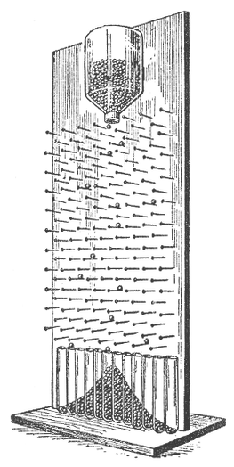
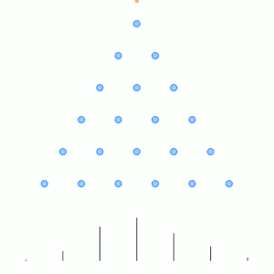
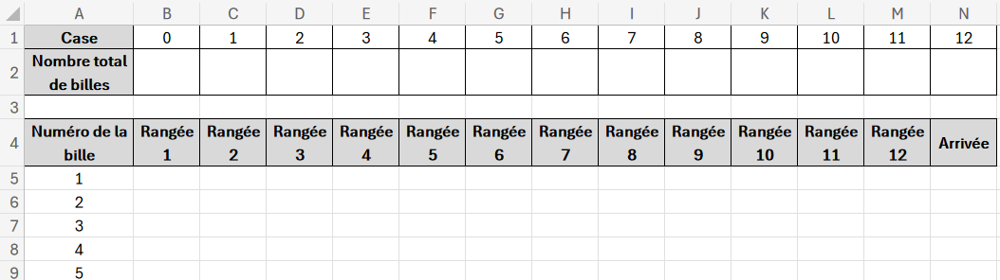
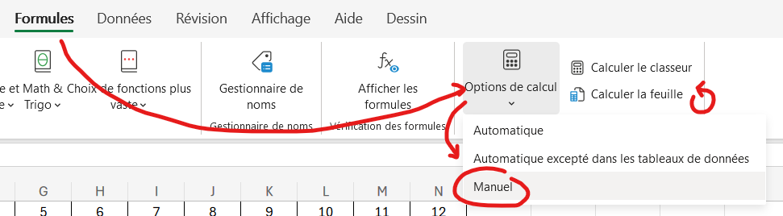
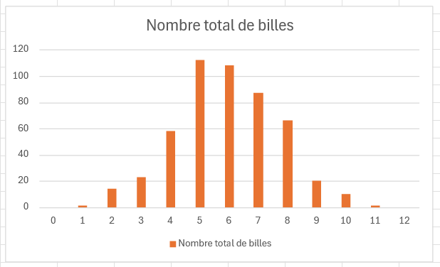

01 - Planche de Galton

Un joueur lâche une bille sur une planche inclinée sur laquelle sont plantés des clous comme sur la figure ci‑contre.
À chaque clou rencontré, la bille passe indifféremment à droite ou à gauche de façon équiprobable.
En fin de parcours, elle tombe dans une case.

Dans ce TP, on considère une planche de Galton à douze rangées de clous.
Il y a donc 13 cases numérotées de 0 (case à gauche) à 12 (case à droite).
On suppose qu'à chaque clou, la probabilité d'aller à droite est égale à 0,5.
Qui est Galton ?
Sir Francis Galton (1822 - 1911) est un anthropologue, explorateur, géographe, inventeur, météorologue, écrivain, proto-généticien, psychométricien et statisticien britannique.
Objectifs
Simuler la chute de 1 000 billes le long de cette planche et vérifier que la simulation est bien cohérente avec la théorie.
Questions préliminaires
1) En réalisant un schéma et en partant du principe que à chaque niveau quand la bille tombe à gauche son trajet vaut 0 et que quand elle part à droite son trajet vaut 1, trouver le lien entre le parcours de la bille et le numéro de la case dans laquelle elle va tomber.
2) Estimer la probabilité que la bille tombe :
-
Dans la case de gauche
-
Dans la case n°1
Simulation dans Excel 365
1) Reproduire à l'aide d'Excel 365 la feuille de calcul ci-dessous.

2) On commence par la bille n°1. Remplir les colonnes B5 à M5 aléatoirement de 0 et de 1.
3) A partir du résultat de votre réflexion préléminaire, compléter la case N5 avec une formule qui calcule la case d'arrivée de la bille.
Comment empêcher Excel de recalculer sans cesse les formules ?

4) A l'aide de la poignée de recopie, simuler la chute de 1000 billes.
5) Utiliser la ligne 2 pour compter le nombre de billes dans chacune des cases d'arrivée.
Indice
Utiliser les fonctions Excel NB.SI
6) Créer le graphique ci-dessous à l'aide des données des lignes 1 et 2.

Simuler à l'aide d'un programme en C++
Le programme à développer devra simuler le lâcher des billes sur la planche de Galton.
Le nombre de lignes de la planche de Galton et le nombre de billes à lâcher doivent être renseignés sur la ligne de commande.
Après avoir simulé le lâcher des billes, le programme affichera le nombre de billes par cases (bins) ainsi que leur indice.
Affichage attendu :
> ./galton.exe 12 1000
[ 0 ][ 2 ][ 18 ][ 40 ][ 117 ][ 191 ][ 246 ][ 203 ][ 112 ][ 55 ][ 14 ][ 1 ][ 1 ]
0 1 2 3 4 5 6 7 8 9 10 11 12
> ./galton.exe 5 500
[ 16 ][ 76 ][ 167 ][ 150 ][ 73 ][ 18 ]
0 1 2 3 4 5
Développer le programme en respectant les éléments de conception suivants.
Diagramme de classes
Le diagramme de classes du programme est le suivant :
classDiagram
class GaltonBoard {
- rowsCount : int
- bins : int [ ]
+ GaltonBoard(_rowscount : int)
+ ~GaltonBoard()
- emptyBins()
+ dropMarbles(int marblesCount)
+ displayBins()
}
class Marble {
- bin : int
- direction() bool
+ drop(rowsCount : int)
+ getBin() int
}
GaltonBoard -- MarbleGaltonBoard est la classe permettant de simuler le lâcher de toutes les billes.
Le rôle des méthodes est le suivant :
-
GaltonBoard::GaltonBoard(_rowsCount : int)est le constructeur deGaltonBoard, il valoriserowsCountet crée le tableaubinsdans le tas. -
GaltonBoard::~GaltonBoard()est le destructeur deGaltonBoard, il désallouebins. -
GaltonBoard::emptyBins()remet à zéro le tableaubins. -
GaltonBoard::dropMarbles(marblesCount : int)lancemarblesCountbilles et stocke incrémente le nombre de billes dans la case correspondante du tableaubins. -
GaltonBoard::displayBins()affiche le contenu du tableaubins.
Marble est la classe permettant de simuler le lâcher d'une bille.
-
Marble::direction()définit si la bille est allée à gauche (0) ou à droite (1). -
Marble::drop(rowsCount : int)simule le lâcher d'une bille pourrowsCountlignes et sauvegarde le numéro de la case d'arrivée dansbin. -
Marble::getBin() : intaccesseur debin.
Diagramme de séquence
Le diagramme de séquence du programme est le suivant :
sequenceDiagram
autonumber
Programme->>Programme: Vérifier les paramètres (rowsCount, marblesCount)
create participant GaltonBoard
Programme->>GaltonBoard: new(rowsCount)
Programme->>+GaltonBoard: dropMarbles(marblesCount)
create participant Marble
GaltonBoard->>Marble: new()
loop marblesCount
GaltonBoard->>+Marble: drop(rowsCount)
loop rowsCount
Marble->>Marble: direction()
end
Marble->>Marble: sauvegarder le numéro de la case()
Marble->>-GaltonBoard: fin
GaltonBoard->>Marble: getBin()
GaltonBoard->>GaltonBoard: Incrémenter la case()
end
destroy Marble
GaltonBoard-xMarble:
GaltonBoard->>-Programme: fin
Programme->>+GaltonBoard: displayBins()
GaltonBoard->>-Programme: fin
destroy GaltonBoard
Programme-xGaltonBoard: